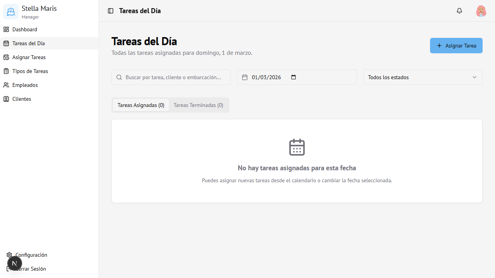

Módulo 03
Tareas del Día
Vista operativa del día a día: todas las tareas asignadas para una fecha específica.
Vista general

Controles de la pantalla
Filtros disponibles
| Control | Función |
|---|---|
| Buscador | Filtra por nombre de tarea, cliente o embarcación |
| Selector de fecha | Cambia el día consultado (por defecto: hoy) |
| Estado | Filtra por estado: Todos, Pendiente, Aceptada, Completada, etc. |
Pestañas
- Tareas Asignadas — Muestra las tareas activas (pendientes y aceptadas)
- Tareas Terminadas — Muestra las tareas completadas del día
Asignar una tarea desde esta pantalla
- Hacer clic en el botón + Asignar Tarea (arriba a la derecha)
- Se abre el diálogo de asignación (ver módulo 07 — Asignar Tareas)
- La fecha se pre-completa con el día seleccionado
Estados de las tareas
Pendiente
Aceptada
Completada
Rechazada
Cancelada
| Estado | Descripción |
|---|---|
| Pendiente | Asignada, esperando confirmación del empleado |
| Aceptada | El empleado confirmó que la realizará |
| Completada | La tarea fue finalizada |
| Rechazada | El empleado rechazó la tarea |
| Cancelada | La tarea fue cancelada por el administrador |
Acceso
Visible para Administrador y Encargado.
Ruta:
Ruta:
/today-tasks